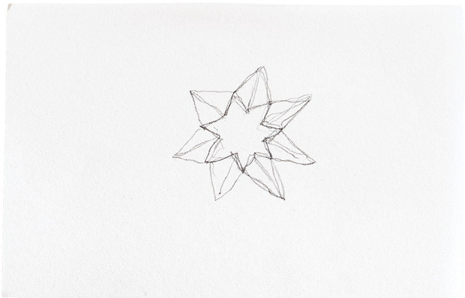
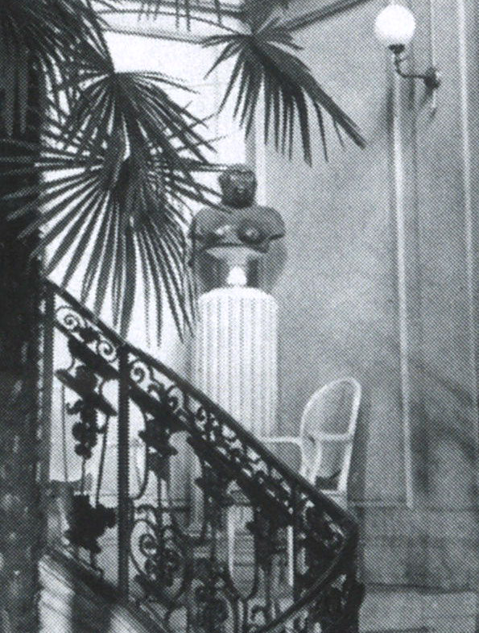

Alles wirkte irgendwie wie eingefroren in der Zeit (ein bisschen wie ein Foto), ausser die Uhr, die noch lief (mit dem Pendel und einem leichten Geräusch).Ethan Pageot
Was ist denn die olfaktorische Komponente der repräsentativen Dimension der Schweiz?

Aus einer multisensorischen Perspektive, also nicht nur vom dem Sehsinn her gedacht, ist ein physischer Ort nicht vollständig reproduzierbar.
Geräusche, Gerüche, der kühle Luftzug vom offenen Fenster auf der Haut, all das kann nicht eingefangen werden.
Die Trompete links ist zerbrochen. Das Bild stammt von einem 360°– Raumscan, dessen einzelnen Bildteile automatisiert zusammengesetzt wurden.
Ein Gefühl für die Wirkung des Raumes kann dadurch digital gewonnen werden, es ersetzt aber nicht den wirklichen Raum.
Die Sekunden ticken und die Jahrhunderte werden plötzlich spürbar.
Wer sich im Raum bewegt, kann auf Details achten. Nicht nur sichtbare, auch das Ticken einer Uhr fällt plötzlich auf.
Dieser Kontext verliert sich bei einer digitalen Reproduktion.
Ich frage mich, ob man diese Gobelins1 und Vorhänge auch riechen kann…Ralf Junghanns
×
1Fachbegriff für «Wandteppiche», genauer Wirkereien. Im Treppenaufgang hängen zwei solche Stoffe in enormer Grösse.
×



Hier die Uhr, von der ich mir nicht sicher bin, ob ich sie abbilden soll. Gleichzeitig fände ich es fahrlässig, es nicht zu tun. Deshalb wird die Figur hier – wie leider auch vor Ort – nur im Spiegel reflektiert.

Turnherr, Walter. Wie der Bundesrat die Schweiz regiert und weshalb es trotzdem funktioniert. Kein & Aber, 2025. Abb. 16, S. 233. © Bundesamt für Bauten und Logistik.
Walter Turnherr erwähnt in seinem Buch über den Bundesrat auch das Beatrice von Wattenwyl-Haus, in dem sich all die hier gezeigten Objekte befinden.
Dass die ‹Trophäenbüste eines Menschenaffen› aus der Grosswildjägerzeit der Familie von Wattenwyl aus dem Treppenhaus entfernt wurde1, zeigt eine gewisse Flexibilität des Mobiliars – wenn denn so erwünscht.
Trotzdem sind Objekte, wie die oben gezeigte Uhr, noch immer zu sehen. Das wirft Fragen zur repräsentativen Funktion des Hauses für den Bundesrat und die Eidgenossenschaft auf.
Turnherr, Walter. Wie der Bundesrat die Schweiz regiert und weshalb es trotzdem funktioniert. Kein & Aber, 2025. S. 97, 233.
×